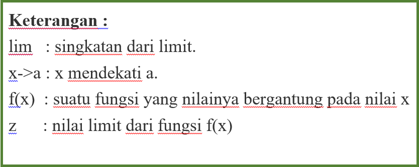

Limit adalah konsep dasar dalam kalkulus yang menggambarkan kecenderungan suatu fungsi mendekati nilai tertentu ketika variabel bebasnya mendekati nilai tertentu pula. Sederhananya, limit adalah nilai yang didekati oleh suatu fungsi saat variabelnya semakin mendekati suatu titik tertentu.
Apabila x mendekati a tetapi x tidak sama dengan a, maka f(x) akan mendekati Z.
